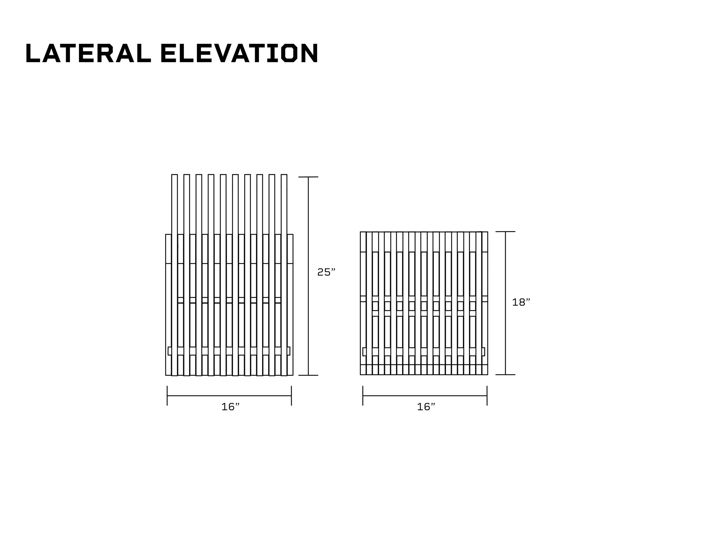

BARE
A chair and bench in one transformable object.
- Year
- 2026
- Duration
- 2 months
- Context
- Prototyping studio
- Tools / process
- Rhino 3D · CNC · Adobe

Two uses.
One structure.
BARE combines a chair and bench in a single plywood object. Interlocking slats and exposed connections make the structure part of the design, while a dowel system enables its transformation.
The studio brief called for a multifunctional seating object made primarily from CNC-milled plywood. The challenge was to combine two uses through a clear structural system, with interlocking components and friction-fit connections that reduce additional hardware.
An exposed
mechanism.
Friction-fit comb joints connect the plywood slats. A dowel acts as a hinge; another locks the object into its bench configuration. The construction remains visible in both forms, expressing the material and mechanism together.

Working through
the geometry.
The earlier iterations and orthographic drawings document the development of the seating form. Plans and elevations show the relationship between the repeated slats, the seat, and the backrest in each configuration.




From flat profiles
to a working assembly.
The CNC cut plan organizes the plywood slats and comb-joint connectors as flat profiles, including the connection notches and dowel holes. The exploded drawing shows how the repeated profiles align and connect to form the seat. Together, the drawings link fabrication geometry to the exposed structure of the chair-and-bench system.


Construction
as expression.
The name combines “bench-chair” with the idea of being bare. The object brings transformation, joinery, and material expression into one seating system: the visible structure is also what allows the function to change.